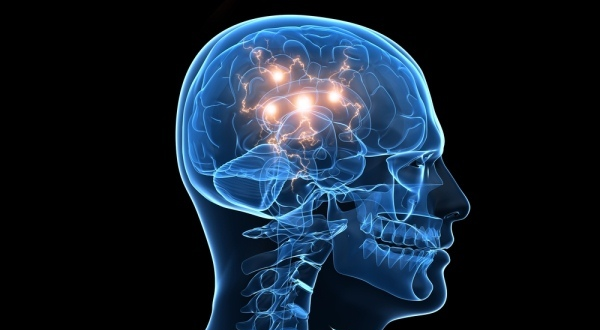
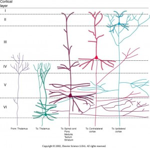

utenstat.no
utenstat.noSlik fungerer hjernen
25. juli 2015 | Sondre Bjellås
Hvis man gjør et søk på nettet etter «slik fungerer hjernen» eller «hvordan virker hjernen?» så er det ganske triste greier som kommer opp som resultat. Det kan virke som tilgang på en god gjennomgang av hvordan hjernen er bygd opp, ikke er så lett tilgjengelig på det norske språket.
Hjernen er et fantastisk organ. Den er enormt komplekst og som er et resultat av millioner av års evolusjonær utvikling. Vitenskapen forsøker å forstå og forklare hvordan den har utviklet seg og hvordan den fungerer.

Noe av denne kunnskapen vil jeg dele med deg her, på en måte som er lett tilgjengelig for noen som ikke har noen bakgrunn innenfor fagområdet som heter nevrovitenskap. Nevrovitenskap er et bredt område med vitenskap fra mange felter, som jobber med å dokumentere de mange ulike aspektene av hjernen og dens funksjoner, konsekvenser, oppførsel, m.m…
Grunnleggende konsepter
Nevroner
Forskning.no har en veldig grunnleggende video som forklarer litt om forskningsmetodene og har en visualisering av hjernen byggesten, nevronet (også kalt nervecelle). En ting jeg vil oppklare om nevronet som ikke kommer helt frem i filmen, er at i hjernen vår har vi flere distinkt ulike nevroner. Nevroner kobler hjernen sammen med resten av kroppen vår. Det er altså samme byggesten som skaper tankene dine, som får en hånd til å bevege seg eller som gir deg følelsen av vind som går over huden din. Nevroner kan altså ha «ledninger» som går veldig langt og gjennom hele kroppen. Nevronene inngår i hva vi kaller for nervesystemet.
Telefoner
Som en analogi til hjernen vil jeg bruke en smart-telefon, da dette er noe som de fleste har brukt og kan relatere til. En telefon i dag har en oppbygging av som helt likt en datamaskin, så sammenlignene er de samme om man snakker om telefon eller datamaskin (PC).
Først vil jeg bare si at en datamaskin og hjernen ikke er direkte sammenlignbare. De er fundamentalt forskjellige, men en datamaskin kan faktisk brukes til å simulere hvordan hjernen fungerer. Mer om dette senere.
Telefonen din har en rekke integrerte kretser som gjør distinkt ulike oppgaver, slik har også hjernen din ulike deler som er ansvarlige for ulike oppgaver. Slik de integrerte kretsene i telefonen har utviklet seg gjennom tidene, har delene av hjernen utviklet seg gjennom evolusjon over enda lengre tid.
Tidligere var det ikke dedikerte kretser for å forstå video og lyd, nå har telefonen dedikerte kretser som raskere og bedre kan forstå video og lyd, og så mye annet.
De første nervekretsene som utviklet seg på jorden, var veldig begrenset. Men det var slik at desto bedre kretsene fungerte, desto bedre overlevde det livet som hadde dem. Vårt avanserte optiske nervesystem, startet først med veldig enkel oppdagelse av lys og mørke. Oppfattelse og registrering av farger, er noe som kom senere.
Transistorer og nevroner
En integrert krets (CPU, GPU, m.m.) i en telefon består av en rekke transistorer. En transistor er en port som enten er åpen eller lukket. Det finnes mange ulike varianter av transistorer, slik det finnes ulike nevroner. Her kan du lese en introduksjon til datateknikk.
En transistor alene kan ikke si veldig mye, den kan si om det er lyst eller mørkt. Om noe er på, eller om noe er av. Det er ikke før man setter dem sammen i en integrert krets, at man kan gjøre mer avanserte funksjoner.
Ett nevron alene kan ikke gjøre veldig mye, men den har flere egenskaper enn en enkelt transistor. Når man setter nevroner sammen i en krets, blir det et nevralt nettverk.
Programvare og lærdom
En integrert krets alene gjør lite, hvis den ikke blir styrt av en programvare. Slik et nettverk av nevroner ikke gjør noe, før man lærer. Når man lærer, så lagres læringen som en form for vekting i de ulike nevronene. Denne vektinigen er mer konkret kalt potensiale. Potensiale for å sende et signal, eller ikke. I filmen ovenfor så visualiseres kommunikasjon mellom nevroner, hvor nevrotransmitter sender kjemiske signaler. Veldig forenklet, så hvis en enkelt nevron (celle) har blitt trent til å ikke reagere lett, så må det mer kjemiske signaler til for at nevronet skal reagere og skape et elektrisk signal.
Når vi ønsker å simulerer hvordan hjernen fungerer, kan vi bygge såkalte kunstige nevrale nettverk.
Man trenger altså å installere en app, et program, på telefonen for at den skal gjøre noe. For at et nevralt nettverk skal gjøre noe, må man gjøre noe som er analogt med å installere en app, nemlig å lære seg noe og dermed trene opp (lagre) nettverket.
Dette er selvsagt veldig forenklet, men det forklarer grunnprinsippet.
Hjernedeler
Vår hjerne er bygd opp av flere deler, noen som utviklet seg mye tidligere enn andre. Den viktigste forskjellen mellom oss (patterdyr) og de fleste andre dyr, er at vi ha neocortex (mens jeg skriver dette er den norske artikkelen på Wikipedia for neocortex bestående av kun en setning) som er den største delen av hjernebarken.
Hjernebarken integrerer med alle de eldre delene av hjernen og har kapasitet til å overstyre mange av de mer instinktive oppførselene og reaksjonene som hjernene vår lager. Siterer meg selv her hvor dette er litt mer forklart.
*«Hjernen vår består i hovedsak av to deler, den gamle hjernen og den nye hjernen. Dette er ekstremt forenklet. Men man kan se på hjernen som at den gamle delene, som ble utviklet for millioner av år siden, er i større grad basert på instinkter og “hardkodet” oppførsel som har utviklet seg gjennom evolusjon og overlevelse.
Den nye hjernen, er fullstendig fleksibel og er i mindre grad styrt genetisk. Den formes slik vi lever livet vårt, og de koblingene som overlever, er de koblingene vi bruker. Denne delen ble utviklet, først og fremst som en mekanisme for hukommelse. Det er ineffektivt å bruke evolusjon for å lære seg hvordan man best overlever i naturen, så vi utviklet et dynamisk minne som gjør at vi kan lære av erfaringer. Det gjorde at “vi” (andre dyr før oss) ble bedre i stand til å lære av erfaringer, og forutsi fremtiden. Denne nyskapningen i hjernen, gjorde “oss” i stand til å utvikle oss enda mer. Den samme mekanismen gav oss muligheten for å kommunisere, slik at vi kunne dele erfaringer uten å selv måtte erfare. Fremfor at samtlige i familien måtte overleve et angrep fra en løve, var det nok at ett familiemedlem overlevde og kunne advare de andre om faren.
Den nye hjernen er et apparat for å forutsi fremtiden. Det er i all hovedsak hvordan den fungerer, den forutser hva den forventer å få av sanseopplevelser.»*
– Sondre Bjellås
Det er mange funksjoner vi ikke klarer å overstyre, og det er noen vi kan overstyre når vi styrer vår bevissthet til å ignorere instinktive impulser til å reagere.
Hvis et innsekt er på vei til å treffe deg i øyet, vil du instinktiv lukke øynene. Det samme skjer hvis du forsøker å ta deg selv på øyeeplet. Likevel er det slik at hvis du trener deg selv opp, og fokuserer din bevissthet, kan du ignorere impulsen til å lukke og tillatte deg selv til å ta direkte på øyeeplet. Mennesker som bruker linser, må fokusere på dette og lære seg selv opp.
Hvor komplisert er egentlig hjernen?
Hjernebarken består av relativt få nevroner, gjennomsnittlig 19 milliarder for kvinner og 23 milliarder for menn. Til sammenligning har den Afrikanske elefanten 11 milliarder, falsk spekkhogger 10,5 milliarder, mens sjimpanse har 5,5 til 6,2 og gorilla har 4,3 milliarder nevroner.
En gris har 450 millioner mens en hund kun har 160 millioner, katter derimot har 300 millioner.
Nevroner i hjernebarken er den viktigste kilden til intelligens og høyere mentale kapasiteter. Det er derfor veldig trist å vite at milliarder av intelligente og følelsmessige dyr blir slaktet av mennesker hvert eneste år, helt unødvendig. Forståelse og kunnskap om hjernen, er en viktig grunn til at jeg ble veganer.
Hjernen (som helhet, ikke bare hjernebarken) til en voksen mann består av ca. 86 milliarder nevroner.
Intel sin siste CPU (nå i 2015) har 18-kjerner har har til sammenligning 5,5 milliarder transistorer. Det betyr at det kun gjenstår én enkelt dobling fra dagens prosessorer til prosessorer som har like mange transistorer som vi mennesker har i vår hjernebark. Dette er en generell prosessor og en direkte sammenligning med nevroner og transistorer i en slik prosessor, sier ikke veldig mye.
Derimot så har det kommet på markedet en helt ny form for prosessorer, som simulerer nevroner i silikon og dermed unngår behovet for å simulerer kunstige nevrale nettverk i programvare. Dette gir betydelig bedre ytelse. I 2014 lansert IBM sin SyNAPSE prosessor som har 5,4 milliarder transistorer organisert med 4096 kjerner. Denne prosessoren har 1 million nevroner og 256 millioner synapser («koblinger»).
Det finnes spesialiserte integrerte kretser med opptil 20 milliarder transistorer i dag. Nvidia sitt siste skjermkort har 8,1 milliarder transistorer.
Alle disse nevronene er derimot koblet i et uhyre komplisert nettverk med koblinger som er mye mer enn de relativt få milliarder av nevroner.
Hvordan opererer nevroner i nettverk?
Det kan være greit å bruke en analogi med kunstig nevralt nettverk for å prøve å forstå hvordan nevroner i nettverk fungerer.
*«Slike nettverk bruker vi også når avansert programvare på datamaskinen utvikles. Disse nettverkene kan ikke skrives av et menneske, de må læres opp.
Det er så utrolig mange variabler, at man er nødt til å konstruere opplæringsmiljøer for disse nettverkene med instruksjoner til nettverk hvorvidt input er GYLDIG eller UGYLDIG.
Dette brukes av blant annet Google, som har avansert stemmegjenkjenning på sin søkemotor. De har også avanserte algoritme som gjør gjenkjenning av lignende bilder som du laster opp.
Tradisjonelt sett, opererer datamaskiner med bits. Tallene 0 og 1 er binære tall, laveste bestanddel av en datamaskin. Disse er høyst deterministiske og det er essensielt for vitenskap, matematikk, økonomi og alt annet i våre liv – at datamaskiner er pålitelige.
Når man kalkulerer 1+1 må resultatet alltid være 2. Kunstig neurale nettverk derimot, trenes opp. Disse er fra utenforstående, ikke deterministiske.
Hvis vi har trent opp ett neuralt nettverk til å gjenkjenne bokstaven “e” i bilder, kan det godt hende at enkelte fonter og i enkelte bilder, så vil nettverket ikke oppfatte “e”. Det kan også hende at den oppfatter andre bokstaven, som f.eks. “a” som en “e” i enkelte tilfeller.
På forhånd, er det umulig å vite dette, både praktisk og teoretisk. Man er nødt til å gi nettverket den nødvendig input (aka. kunnskap/minne/erfaring), før man kan vite hva det endelige resultatet er.»*
– Sondre Bjellås
Et annet eksempel på hvordan hjernen gjør en hel rekke avgjørelser som du har ingen kontroll over, som utføres av vår underbevissthet, er hvordan hjernen velger hvilken farge du skal oppleve en bestemt samling av signaler på den optiske nerven.
Lys er et spektrum av farger, i overgangen mellom farger er det nyanser. Når hjernen forsøker å forstå det innkommende lyset, og de elektriske impulsene som det resulterer i, så må hjernen på ett tidspunkt i ett av de 6 lagene i neocortex, ta en avgjørelse hvorvidt noe er f.eks. blått eller lilla. Noen mennesker vil påstå at en farge er blå, andre vil påstå den er lilla.
Neocortex består altså av 6 ulike lag, som er ansvarlig for å behandle impulser til hjernen din på ulike lag av abstraksjoner og detaljnivå. Når du ser med dine øyner, så oppfatter hjernen først kanter, forskjeller mellom lyst og mørkt, og andre grove detaljer. Videre opp i høyere lag i neocortex, begynner du å oppfatte bokstaver og andre detaljer i omgivelsene dine. Enda høyere opp i lagene, setter du sammen bokstaver til å bli ord. Enda lengre og høyere i kompleksitet og abstraksjon, så forstår du ord som setninger og abstrakte konsepter. Når du kommer så høyt opp, har hjernen allerede sammenstilt tidligere erfaringer, hukommelse og trent oppførsel.
Impulser som ikke resulterer i signaler som går oppover i lagene i neocortex, vil heller aldri komme inn i din korttidshukommelse og dermed heller ikke inn i din langtidshukommelse. Vi har mange ulike former for hukommelse, og forskjellige eldre deler av hjernen er ansvarlig for å lagre hukommelsen. Neocortex er koblet til Hippocampus fra flere lag og har kobling begge veier. Koblinger mellom neocortex og de gamle hjernedelene er alle ulike og opererer på forskjellige nivåer.
Slike koblinger til hjernens deler er noe du kan studere videre med å lese bøker som omhandler hjernen.
Her følger et diagram som visualiserer litt hvordan oppbyggingen er med ulike lag.

Med det konkluderer jeg denne overordnede gjennomgangen av hvordan hjernen fungerer. Det kan godt hende jeg oppdaterer denne artikkelen med mer innhold senere, og legg gjerne igjen en kommentar hvis det er feil, spørsmål eller forslag til utvidelse av enkelte områder.
Tidligere poster om hjernen: